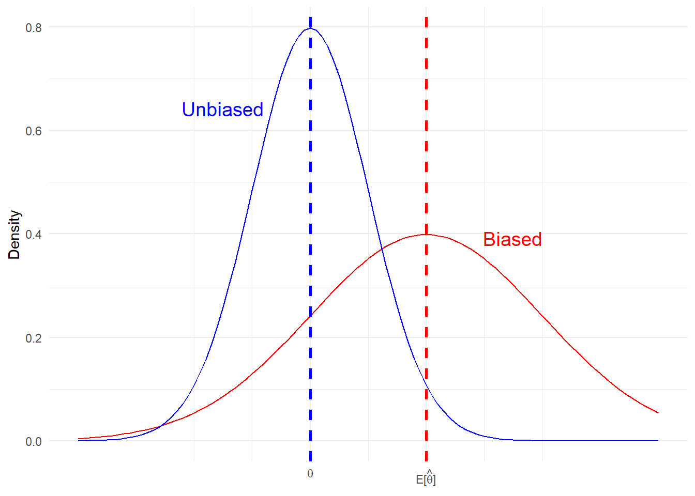

Code
library(ggplot2)
library(latex2exp)In this handout we will investigate the desirable properties of an estimator. Further reading can be found in:
An estimator is a rule that tells you how to get your estimate given the observed data. As it is a that it is a function of random variables, an estimator is a random variable itself.
Without further information, we do not know anything about the distribution of this random variable and, in practice, will typically have to estimate the parameters of this distribution: mean, variance, skewness.
The assumed model (or data generating process) may pin down certain parameters or distributions. For example, under assumpions CLRM 5 & 6 the ordinary least squares estimator for \(\beta\) will be normally distributed.
When evaluating an estimator you want to consider:
bias: does the estimator yield estimates that ‘hit the right target’ on average?
efficiency: do the estimates generated by the estimator have a limited dispersion/variance?
distribution: do you know the exact/approximate distribution of the estimator with which you can construct a valid hypothesis test?
It is important to consider both the small sample and large sample (asymptotic) properties of an estimator.
Unbiasedness (property 1) is typically emphasized over properties 2 and 3. Afterall, a precise estimator of the wrong target is not particularly useful. That said, the expected value of an estimator is not always well defined.
These are properties of the estimator, a random variable, and not the estimate. The estimate is a just a constant: a non-random realization of the estimator.
Sometimes it is easier to study the large-sample, or asymptotic, properties of an estimator. That is, the properties of the estimator as the sample size gets large: \(n\rightarrow \infty\).
Small-sample properties include:
Biasedness
Efficiency/variance
Finite-sample distribution
Large-sample properties include:
Consistency
Asymptotic distribution
An estimator can have an asymptotic variance (efficiency); although, in EC910 will mostly discuss estimators with variances that shrink to zero as \(n\rightarrow \infty\).
The phrase “finite-sample” is also used in other contexts. For example, in the Causal Inference (or Treatment Effects) literature “finite-sample” is used to describe estimands. This literature distinguishes between finite-sample and super-population estimands. The former relate to settings where the sample is treated as fixed, while the latter to settings where the sample is take as a draw from an unknown super population.
The estimator for a super-population estimand will have both finite and asymptotic properities.
The estimator \(\hat{\theta}\) is unbiased for \(\theta\) if,
\[ E(\hat{\theta}) = \theta \] \(\hat{\theta}\) is a function of sample size, \(n\), while \(\theta\) is not. Some texts will use the notation \(\hat{\theta}_n\) to emphasize this point.
x_values <- seq(-2, 3, length.out = 100)
ggplot(data.frame(x = x_values), aes(x = x)) +
stat_function(fun = dnorm, args = list(mean = 1, sd = 1), color = "red") +
stat_function(fun = dnorm, args = list(mean = 0, sd = .5), color = "blue") +
geom_vline(xintercept = 1, linetype = "dashed", color = "red", linewidth = 1) +
geom_vline(xintercept = 0, linetype = "dashed", color = "blue", linewidth = 1) +
labs(
title = NULL,
x = NULL,
y = "Density"
) +
scale_x_continuous(
breaks = c(0, 1),
labels = c(TeX("$\\theta$"), TeX("$E[\\hat{\\theta}]$"))
) +
theme_minimal() +
annotate("text", x = 1.75, y = 0.35, label = "Biased", vjust = -1, hjust = 0.5, size = 5, color = "red") +
annotate("text", x = -0.75, y = 0.6, label = "Unbiased", vjust = -1, hjust = 0.5, size = 5, color = "blue")
Efficiency is a relative concept. The estimator \(\hat{\theta}\) is more efficient the estimator \(\tilde{\theta}\), if both are unbiased for \(\theta\) and
\[ Var(\hat{\theta})<Var(\tilde{\theta}) \] What if the estimator is biased? We can use Mean Square Error:
Definition 1 (MSE) \(MSE = E\big[(\hat{\theta}-\theta)^2\big] = \text{bias}^2+\text{variance}\)
Note, the above definition assumes that a finite variance.
Proof. \[ \begin{aligned} E\big[(\hat{\theta}-\theta)^2\big] &= E\big[\big((\hat{\theta}-E[\hat{\theta}])-(E[\hat{\theta}]-\theta)\big)^2\big] \\ &=E\big[(\hat{\theta}-E[\hat{\theta}])^2\big]+ E\big[(\theta-E[\hat{\theta}])\big] - 2E\big[(\hat{\theta}-E[\hat{\theta}])(\theta-E[\hat{\theta}])\big] \\ &=Var(\hat{\theta}) + \text{bias}^2 \end{aligned} \]
The first line adds and subtracts the mean of the estimator, which need not be \(\theta\), the targetted population parameter. The second expands the outside exponent over the two bracketted terms.
The cross-product term in line 2 is 0. Can you show this?
Consistency is an asumptotic property of an estimator.
Definition 2 The estimator \(\hat{\theta}_n\) is a consistent estimator of \(\theta\) if it converges in probability to \(\theta\) as \(n\rightarrow\infty\),
\[ Pr(|\hat{\theta}_n-\theta|\geq\varepsilon)\rightarrow 0\qquad n\rightarrow 0 \] for \(\varepsilon\) very small.1
Intuitively, this means that tail area probabilities (i.e. probability of an estimator very far from the true value) goes to zero as the sample size gets large.
We use the notations, \(p\lim\),
\[ p\lim\hat{\theta}_n = \theta \]
or convergence in probability,
\[\hat{\theta}_n \rightarrow_p \theta\qquad\text{as}\qquad n\rightarrow \infty\]
An important theorem regarding the consistency of estimators is Slutzky’s theorem concerning continuous functions of estimators. For example, we will use this theorem to prove the consistency of the OLS estimator.
Theorem 1 (Slutzky’s Theorem) If \(p\lim\hat{\theta}_n = \theta\) and \(h(\cdot)\) is a continuous function, then
\[ p\lim\;h(\hat{\theta}_n) = h\big(p\lim\hat{\theta}_n\big)=h(\theta) \]
Here are some useful examples,
Example 1 Given two consistent estimators \(\big[\hat{\theta}_n,\hat{\beta}_n\big]\),
\(p\lim\;(a\hat{\theta}_n+ b\hat{\beta}_n) = a(p\lim\;\hat{\theta}_n)+b(p\lim\;\hat{\beta}_n) =a\theta +b\beta\) for constants \(a\) and \(b\)
\(p\lim\;(\hat{\theta}_n\times\hat{\beta}_n) = (p\lim\;\hat{\theta}_n)\times (p\lim\;\hat{\beta}_n)=\theta\beta\)
\(p\lim\;(\hat{\theta}_n^2) = (p\lim\;\hat{\theta}_n)^2 = \theta^2\)
\(p\lim\;\bigg(\frac{\hat{\theta}_n}{\hat{\beta}_n}\bigg) = \frac{\theta}{\beta}\)
\(p\lim\;\exp(\hat{\theta}_n) = \exp(p\lim\;\hat{\theta}_n) = \exp(\theta)\)
MSE convergence (to zero) is a sufficient condition for consistency. However, it is not a necessary.
For an unbiased estimator,
\[ Var(\hat{\theta}_n)\rightarrow 0 \quad \text{as}\quad n\rightarrow 0 \implies p\lim\hat{\theta}_n = \theta \]
For a biased estimator,
\[ MSE(\hat{\theta}_n)\rightarrow 0 \quad \text{as}\quad n\rightarrow 0 \implies p\lim\hat{\theta}_n = \theta \]
Exercise 1 Given a sample of independently and identically distributed (iid) random variables, \[ X_1,...,X_n \sim N(\mu,\sigma^2) \] Show that the mean estimator - \(\overline{X} = \frac{1}{n}\sum_{i=1}{n}X_i\) is a consistent estimator of \(\mu\); i.e. \(p \lim\;\overline{X} = \mu\).
The above exercise relates to one of the most important examples of convergence in probability:
Theorem 2 (Weak Law of Large Numbers) Let \(X_1,...,X_n\) be a sample of iid random variables, such that \(E|X_1|<\infty\). Then, \[ n^{-1}\sum_{i=1}^{n}X_i \rightarrow_p E[X_1]\qquad \text{as}\qquad n\rightarrow \infty \]
Here we use the notation \(E[X_1]\), since the data is iid and \(E[X_i]=E[X_1]\) for \(i=1,...,n\). We prove a modified version of the WLLN theorem, assuming \(E[X_1^2]<\infty\). Since \(E[X_1^2]<\infty\implies\) both \(E|X_1|<\infty\) and \(Var(X_1)<\infty\), we will have proven WLLN theorem.
Theorem 3 Let \(X_1,...,X_n\) be a sample of iid random variables, such that \(Var(X_1)<\infty\). Then, \[ n^{-1}\sum_{i=1}^{n}X_i \rightarrow_p E[X_1]\qquad \text{as}\qquad n\rightarrow \infty \]
To complete the proof of WLLN, we will need to use Markov’s Inequality. We will not prove this lemma, but versions of the proof are readily available online.
Lemma 1 (Markov’s Inequality) Let \(X\) be a random variable. For \(\varepsilon>0\) and \(r>0\), then
\[ Pr(|X|\geq \varepsilon)\leq \frac{E\big[|X|^2\big]}{\varepsilon^2} \]
Now, we can complete the proof of WLLN, assuming a finite second moment.
Proof. \[ \begin{aligned} Pr\bigg(\bigg|n^{-1}\sum_{i=1}^{n}X_i - E[X_1]\bigg|\geq \varepsilon\bigg) &= Pr\bigg(\bigg|n^{-1}\sum_{i=1}^{n}(X_i - E[X_1])\bigg|\geq \varepsilon\bigg) \\ &\leq \frac{E\big[|\sum_{i=1}^{n}(X_i - E[X_1])|^2\big]}{n^2\varepsilon^2} \\ &=\frac{\sum_{i=1}^{n}\sum_{j=1}^{n}E\big[(X_i - E[X_1])(X_j - E[X_1])\big]}{n^2\varepsilon^2} \\ &=\frac{\sum_{i=1}^{n}E\big[(X_i - E[X_1])^2\big]}{n^2\varepsilon^2} \\ &=\frac{nVar(X_1)}{n^2\varepsilon^2} \\ &\rightarrow 0 \qquad \text{as}\qquad n\rightarrow \infty \end{aligned} \]
Note, the WLLN holds under a weaker condition than iid. Between lines 3 and 4 we used the independence of observations to set correlations between units to 0. Thus, we required a weaker assumption of uncorrelateness: \(Cov(X_i,X_j)=0\;\forall\;i\neq j\).
Under the WLLN, you can show that the sample variance converges in probability to the population variance.
\[ p\lim \big(n^{-1}\sum_{i=1}^{n}(X_i - \overline{X})^2\big) \rightarrow_p Var(X_i) \]
In this section we will focus on the asymptotic distribution of an estimator. If we know the joint distribution of the data, then we can potentially work out the distribution of the estimator in a finite sample. This is especially true when the random variables in question are drawn from known families of distributions.
For example, we know that the sum of Normal distributed random variables is Normally distributed itself. And the sum of the square of standard-Normally distributed random variables is Chi-squared distributed. We used these results do determine the distribution of test-statistics corresponding to the Classical Linear Regression Model.2
However, what do you do when you do not know the underlying distribution of the random variables? Here we will rely on a the Central Limit Theorem, which tells us about the approximate distribution of an estimator when the sample is large.
Before discussing CLT, we must define a new convergence concept: convergence in distribution.
Definition 3 Let \(X_1,...,X_n\) be a sequence of random variables and let \(F_n(x)\) denote the marginal CDF of \(X_n\), \[ F_n(x) = Pr(X_n\leq x) \] Then, \(X_n\) converges in distribution if \(F_n(x)\rightarrow F(x)\) as \(n\rightarrow \infty\), where F(x) is continuous.
Convergence in distribution can be denoted,
\[ X_n\rightarrow_d X \]
where X is a random variable with distribution function \(F(x)\). Note, it is not the random variables that are converging, but rather the distributions of said random variables.
As with convergence in probability, there are some basic rules for manipulation.
Unlike with convergence in probability, \(X_n\rightarrow_d X\) and \(Y_n\rightarrow_d Y\) does NOT imply \(X_n + Y_n \rightarrow_d X+Y\), unless joint convergences holds too. This is because the former are statements concerning the marginal distributions of \(X_n\) and \(Y_n\), while the distribution of \(X_n + Y_n\) depends on the joint distribution.
If \((X_n,Y_n)\rightarrow_d (X,Y)\) (joint convergence), then \(X_n+Y_n\rightarrow_dX+Y\). This result follows from the Central Mapping Theorem.
Theorem 4 (Continuous Mapping Theorem) Suppose \(X_n\rightarrow_d X\) and let \(h(\cdot)\) be a continuous function. Then, \(h(X_n)\rightarrow_d h(X)\).
CMT holds for a vector of random variables as well as single random variable. Thus, if
\[ \begin{bmatrix}X_n \\ Y_n\end{bmatrix}\rightarrow_d \begin{bmatrix}X \\ Y\end{bmatrix} \] then by CMT, \[ X_n+Y_n=\begin{bmatrix}1 & 1\end{bmatrix}\begin{bmatrix}X_n \\ Y_n\end{bmatrix} \rightarrow_d\begin{bmatrix}1 & 1\end{bmatrix}\begin{bmatrix}X \\ Y\end{bmatrix} = X+Y \]
Can you show:
Having discussed the CMT, we are now ready to discuss the Central Limit Theorem. Both are used extensively in Econometrics. We will not prove CLT as the proof requires a more detailed discussion of Moment Generating Functions.
Recall, for an iid random sample, the sample converges in probability to the population mean:
\[ p \lim\;\overline{X} = E[X_1] \]
The rate of convergence for this estimator is \(\sqrt{n}\). The estimator is said to be root-\(n\)-consistent.
Theorem 5 (Central Limit Theorem) Let \(X_1,...,X_n\) be a sample of iid random variables such that \(E[X_1]=0\) and \(0<E[X_1^2]<\infty\). Then,
\[ n^{-1/2}\sum_{i=1}^{n}X_i\rightarrow_d N(0,E[X_1^2]) \]
Consider a random sample drawn independently from a distribution with mean \(\mu\) and variance \(\sigma\). Note, this distribution need not be Normal. It holds that, $X_1-,…,X_n-$ are iid and \(E[X_1-\mu]\). In addition, \(E[(X_1-\mu)^2]=\sigma^2<\infty\). Therefore, by CLT
\[ n^{1/2}(\overline{X}-\mu) = n^{-1/2}\sum_{i=1}^{n}(X_i-\mu)\rightarrow_d N(0,\sigma^2) \]
In practice, we use CLT to determine the approximate distribution of an estimator in large samples. Based on the above result, we can say
\[ n^{1/2}(\overline{X}-\mu)\overset{a}{\sim} N(0,\sigma^2) \] or,
\[ \overline{X}\overset{a}{\sim}N(\mu,\sigma^2/n) \]
where \(\sigma^2/n\) is referred to as the asymptotic variance of \(\overline{X}\). Here, the symbol \(\overset{a}{\sim}\) can be interpreted as “approximately in large samples”.
With CMT and CLT, we need one more theorem before we continue. We know from the WLLN that \(\overline{X}\rightarrow_p E[X_1]=\mu\). Moreover, by Slutzky’s theorem we know that \(h(\overline{X})\rightarrow_p h(\mu)\), for \(h(\cdot)\) continuous. However, we do not know the approximate distribution of \(h(\overline{X})\) in a large sample.
Consider, \(h(\mu)\) is a non-random constant and CLT applies to \(n^{1/2}(\overline{X}-\mu)\) and not \(\overline{X}\). The latter implying that we cannot use CMT.
Theorem 6 (Delta Method) Let \(\hat{\theta}_n\) be a random k-dimensional vector. Suppose that \(n^{1/2}(\hat{\theta}_n-\theta)\rightarrow_d Y\), where \(theta\) is a non-random k-dimensional vector and \(Y\) a random k-dimensional vector.
Let \(h: \mathbf{R}^k\rightarrow\mathbf{R}^m\) be a function (mapping) that is continuously differentiable on some open neighbourhood of \(\theta\). Then,
\[ n^{1/2}\big(h(\hat{\theta}_n)-h(\theta)\big)\rightarrow_d \frac{\partial h(\theta)}{\partial\theta'}Y \]
The proof involves Cramer’s Convergence Theorem, Slutzky’s Theorem, as well as the Mean Value Theorem (which we have not discussed). This result is used to derive the limiting distribution of non-linear models and their marginal effects (e.g. probit/logit), as well as non-linear tests of regression coefficients.
The expectation of a continuously-distributed, random variable \(X\) can be defined as:
\[ E[X] = \int_{-\infty}^{\infty}tf_Xdt = \int_{-\infty}^{\infty}tdF_X(t) \]
If \(X\) takes on discrete values, \(X \in \mathbf{X} = \{x_1,x_2,...,x_m\}\), we can replace the integral with a summation and the probability density function (pdf: \(f_X\)) with a probability mass function (pmf: \(p_X\)).
\[ E[X] = \sum_{t\in \mathbf{X}}tp_X(t) \]
An important property of the Exptation operator is that it is linear. Let \(\{a,b\}\) be two constants (non-random scalars), then
\[ E[aX+b] = aE[X]+b \]
Can you show this, using the above definition of the expectation operator?
Similarly, consider two random varibales \(X\) and \(Y\). Then,
\[ E[aX + bY] = E[aX] + E[bY] = aE[X] + bE[Y] \]
However, note
This follows from the fact that \(f_{X,Y} = f_X\cdot f_Y\) if \(X\) and \(Y\) are independent. Note, this is not an iff (if-and-only-if) statement.
\(E\left[\frac{X}{Y}\right]\neq\frac{E[X]}{E[Y]}\) for \(E[Y]\neq0\)
\(E[\ln(X)]\neq \ln(E[Y])\)
In general, \(E[h(X)]\neq h(E[Y])\) with the exception of \(h(\cdot)\) linear function.